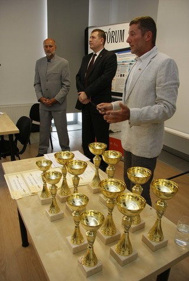
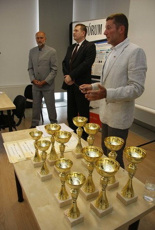
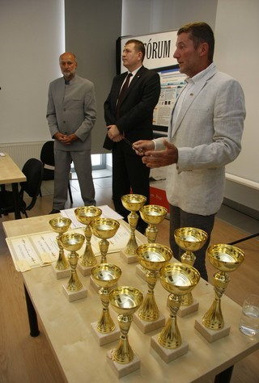

Galéria

 

A Jurista Alapítvány által szervezett kiemelt verseny, kihívások a jogászvilág számára.
A Jurista Kupa egy egyedülálló élmény, amely összehozza a jogi szakemberek minden korosztályát, ez egy Tudományos Sportfesztivál.
Dátum: 2024. június 10.
Helyszín: Budapesti Tenisz Klub
Részvétel: Nyitott minden jogi szakember számára, beleértve a joghallgatókat.

Ha kérdése van, lépjen kapcsolatba velünk az alábbi űrlapon keresztül: